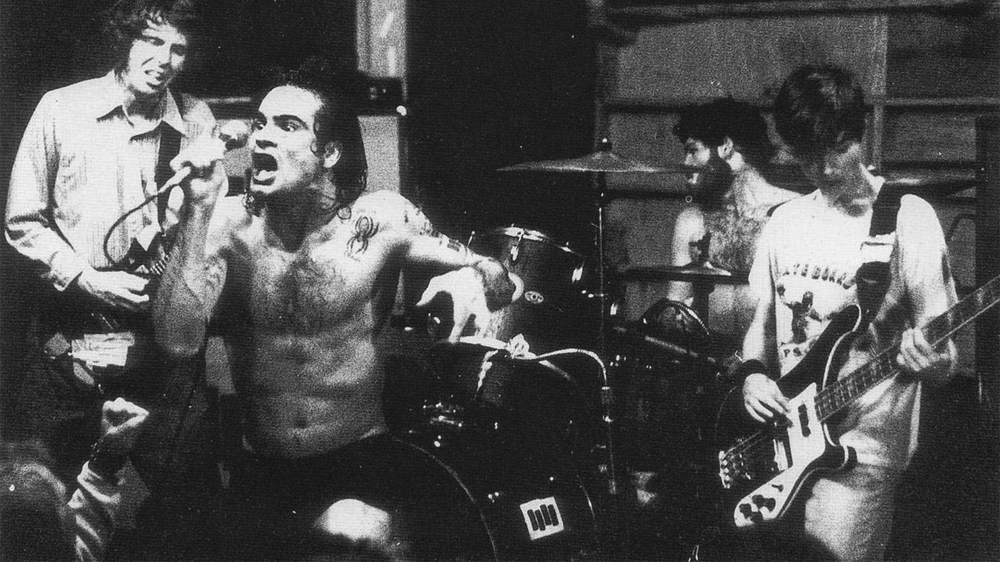

Sludge metal (also known as sludge doom or simply sludge) is an extreme subgenre of heavy metal music that combines elements of doom metal and hardcore punk. The genre generally includes slow tempos, tuned down guitars, and nihilistic lyrics discussing poverty, drug addiction, and pollution. The sound of sludge metal has its origins in California hardcore punk bands in the early-to-mid-1980s like Black Flag, Flipper, and Fang, who began slowing their tempos and embracing the influence of Black Sabbath. This sound was expanded upon by the Melvins towards the end of the decade and the bands they influenced in both the Seattle grunge scene and in Louisiana with Eyehategod, Crowbar, and Acid Bath.
Black Flag
In the 1990s and 2000s, the sound of sludge diversified: bands including Neurosis, Isis, and Cult of Luna helped to pioneer post-metal, while Baroness and Mastodon fused the genre with progressive metal, and Dystopia and Grief did so with crust punk. The key characteristics of sludge metal are a slow tempo combined with down-tuned, heavily distorted guitars. However, some bands do make use of tempo changes into faster sections. The key element that differentiates sludge from other doom metal-derived styles is its influence from hardcore punk, particularly the genre's use of high aggression and screamed vocals, though the genre can include sung vocals. Many sludge bands also make use of elements of industrial music, southern rock, and blues. Bandcamp Daily writer Noah Berlatsky described the genre as "visceral and ugly."
Melvins
Sludge metal's lyrics explore real-world themes, while often also making light of the darkness of these topics. Drug addiction is a common theme, while discussion of poverty and pollution are also prevalent. Sludge bands who lean more towards hardcore are sometimes called sludgecore by music historians, including Garry Sharpe-Young and David Pearson. New Orleans is the birthplace of the sludgecore movement, with Eyehategod being this style's frontrunner. More recently, sludgecore bands like the Abominable Iron Sloth, Admiral Angry, and Black Sheep Wall have emerged.